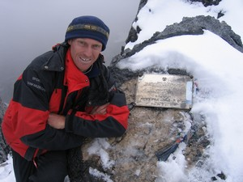

Navigation
 ČESKÁ verze
ČESKÁ verze- The best of New Guinea
- PNG & West Papua
- Today cannibals
- First Contact expedition
- Tribe Expedition
- ITINERARIES AND SCHEDULE
- Korowai & Kombai tribe – Papua Tree people tribes
- Korowai Batu & Kopkaga - tree people
- Asmat tribe – the Papuan cannibals
- Yali tribe
- Mamberamo river of West Papua
- Dani tribe in Baliem Valley
- Lani tribe in Baliem Valley
- Wamena as a first contact place on West Papua highlands
- Papua New Guinea
- Goroka Show & Mt. Hagen Show
- Asaro Mudman
- Huli tribe – the wig-men
- Why to go with us
- The films from our expeditions
- More photos
- References
- Papua Postcards
- Papua Internet
- Links
- Contact us
- Download
Carstensz Pyramid (Puncak Jaya) – 4884 m – Top of Papua
Climbing Carstensz Pyramid
.JPG)
Carstensz Pyramid – the top of Papua Photo©JahodaPetr.com
Carstensz Pyramid (Puncak Jaya) is the highest mountain, not only of the New Guinea Island, but also of Australia and Oceania. It lies in the Snow Mountains of the Indonesian province Papua (former Irian Jaya). The ascent to the summit of the Carstensz Pyramid is possible only using experienced climbing techniques. There are several routes leading to the summit. The simplest one is the “normal” route, which was taken in 1962 by Heinrich Harrer, the first conqueror of the Carstensz Pyramid.
.JPG)
Climbers from Chile near the Carstensz summit Photo©JahodaPetr.com
There are two ways in which we organize expeditions to the Carstensz Pyramid. In the cheaper alternative we take 5 – 7 days long trekking. In the second case, it is possible to fly with a helicopter almost to the Base Camp. In both cases, we have five whole days of climbing to reach the summit. The second alternative lasts about a week less, but it is more expensive.

Carstensz Pyramid-Petr Jahoda on the summit at the memory plaque Photo©Miroslav Caban
We lead our clients to the top of the Carstensz Pyramid using the simpler route, the “normal” one. If someone is interested, he can try the “direct” way on his own; there is enough time for that. Climbing the summit of the Carstensz Pyramid using the “normal” route takes about 12 – 15 hours including return to the Base Camp. It is therefore a one-day trip. We can use the remaining days to climb other summits, such as Nga Pulu, which has a glacier right on the summit, or the very exposed Middle Peak. Alternatively, we can walk to the Carstensz glacier. Despite the fact that the Carstensz Pyramid and Nga Pulu lies almost on the equator, you can even go skiing.
Carstensz Pyramid Trekking – Papua paradise
.JPG)
Beauty of the Carstensz trekking Photo©JahodaPetr.com
Trekking to the Carstensz Pyramid is one of the most beautiful treks Papua can offer. Although it is demanding the things you’ll see and experience on the way, are wonderful and absolutely unique.
It begins at the height of 2000 m in an area of mountainous rain forest. You wade through rivers, climb over logs and primitive bridges, and then the biotope changes into a short belt of misty forests, which opens to the Kembalo Plato that is situated at 3500 m. Here, the endless forest of the giant tree ferns begins. This forest reaches all the way to the Snow Mountains, where the giant mountains begin. The massive of the Carstensz Pyramid towers over the Kembalo Plato with super elevation of 1500 m. The route to the New Zealand Pass is an alpine experience. At the same time it is a test of the porters.
Then you climb to the height of 4500 m. The short trek, between the mountains resembling the world’s most beautiful mountain parks, is concluded by a descent to the Merental Valley. Our Base Camp is situated on the foothill of the Carstensz Pyramid in this valley. At this place you are at the height 4200 m, and even here it snows in the morning. You are separated from the top of the Carstensz Pyramid by 684 meters.
Carstensz Pyramid Papua Aborigines
.JPG)
Papua Damal tribe Photo©JahodaPetr.com
We hire aboriginal porters for the hike to the Carstensz Pyramid. The tribes Kimial and Damal dwell nearby the airport where we land. Even in this day and age some tribesmen walk naked, only with kotekas on their penises and bird beaks on their noses. Heinrich Harrer experienced them as well. We recommend reading his book “Coming from the Stone Age”, which he wrote after discovering the Carstensz Pyramid and finishing his stay in Papua.
The members of the Damal and Kimial tribes are splendid singers. We can enjoy their singing during our trek to the Carstensz Pyramid, during which the porters pass the night under rock overhangs. They keep the fire for the whole night and sometimes sing their traditional songs till the morning. The evenings spent with them strengthens the atmosphere of ancient eeriness. It is definitely an unforgettable experience.
Permits
For going to the Carstensz Pyramid it is essential to have a special permit approved by Indonesian highest security authorities (secret police BAIS ABRI, army, federal police, Ministry of Tourism, Ministry of Sport, Ministry of Immigration …).

Carstensz Pyramid Permits. Do you know wich one is right? Any one of them, or perhaps none? Maybe just one? Photo©JahodaPetr.com
The procedure can take even several months. In the period from 1995 to 2005, the Carstensz Pyramid was completely closed for tourists. Only recently did the government once again approve of climbing in the Carstensz area.
Still there are only few agencies that are in reality able to get the permits. We arrived there just several days after the official reopening of the Carstensz Pyramid. The reason behind this is our long-time friendly cooperation with Indonesian authorities. We are afraid that under normal circumstances, the climbing permit for the Carstensz Pyramid is still virtually unattainable…
Much more information
You can find much more information about climbing the Carstensz Pyramid at www.CarstenszPapua.com. This server is also run by the Absolute Adventure agency.